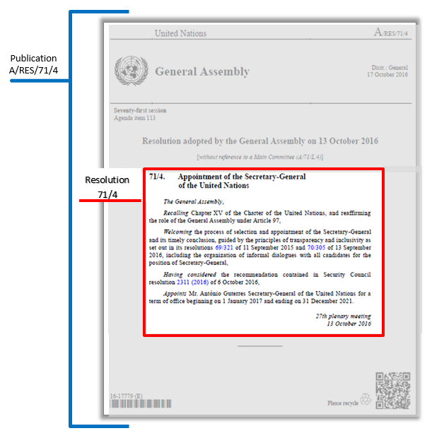
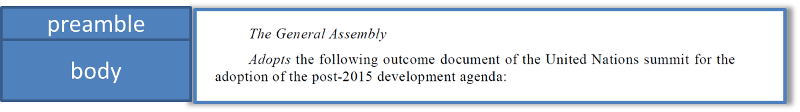
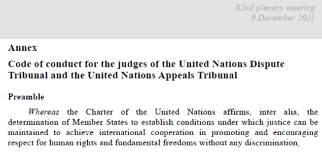

Modelling of GA Resolutions
Document and logical component
In day-to-day language, we use the term “document” to refer to many different things: an official record, a collection of different documents, a report, an official letter, to list just a few. At the same time, the dictionary defines a document as “any content whatever its medium (written on paper or stored in electronic form or as a sound, visual or audio-visual recording) that provides information or evidence or that serves as an official record”.
For the purposes of AKN4UN, we are not particularly interested in the medium, instead we would like to make the distinction between what we call:
“Document”: the physical document as it appears to the readers in whatever medium it may be, whether on paper, electronic or other format;
and
“Logical Component”: any logically and functionally distinct component of a “document”.
The typical life cycle of a resolution lends itself quite well to appreciate this distinction:
The first appearance of a resolution may be in a letter that the proponent sends to a deliberative body, or its members, to inform it of his/her intention to submit a resolution.
Subsequently, the resolution may be issued in a publication as a “draft resolution” or in documents of a different nature, such as committee reports.
After the resolution is discussed in a deliberative body, if approved, it may be published as an adopted resolution in a publication or in the official records of the relevant meeting.
In the last stage of its life cycle, a resolution may be published in the official compilation, becoming its “authoritative version”.
The whole life cycle of a resolution actually takes place through a series of “documents” in which the resolution takes different “forms”, as you can see in the table below.
Table: Lifecycle of a Resolution
document | resolution |
status | form |
letter | proposed | attached to a submission letter |
publication | draft | in the body of a publication |
committee report | draft | in the body of a committee report |
draft | attached to a committee report |
publication | adopted | in the body of a publication |
official records | adopted | in the body of a meeting report |
adopted | attached to a meeting report |
official cumulation | authoritative | part of a collection of resolutions |
As we can see from the table above, the resolution, as a logical component, may appear, for example, in the body of the hosting document, as an attachment to a hosting document, or as a component of a container of other documents.
In order to trace the path of a resolution from its first draft till the end of its lifecycle, there is a need to make the very critical distinction between the “document”, as it appears to the readers, and the “logical component”, which is any functionally distinct component of a “document”.
The “logical resolution” is a structurally distinct component that persists across the different “documents” where a resolution may appear in its lifecycle, as we show in the table below.
Table: Lifecycle of a resolution: distinguishing between document and logical component
document | logical components | status | form |
letter | letter | resolution | proposed | attached to |
publication | publication | resolution | draft | in the body of |
committee report | committee report | resolution | draft | in the body of |
resolution | draft | attached to |
publication | publication | resolution | adopted | in the body of |
official records | meeting report | resolution | adopted | in the body of |
resolution | adopted | attached to |
official cumulation | official records | resolution | authoritative | part of a collection |
To visually distinguish between the “publication” and the “logical component”, we show below the publication of a resolution and the relationship between the logical resolution and the publication container.
Table: Resolution Publication

A resolution document can be modelled using:
AKN4UN <documentCollection name=”publicationResolution”> for the publication content (masthead info, publication titles, headers, footers, etc.);
AKN4UN <statement name=”resolution”> for the actual core content of the resolution.
In this way, it is possible to produce PDF versions of the resolution with all the required formatting, but also to reuse only the “logical component resolution” part, e.g. in an official compilation where only the core resolution is actually used.
NOTE:
In the following examples, the focus is on the structural mark-up of AKN4UN document classes. If we would have also added to the examples below a full semantic mark-up, the code would have been unreadable, thereby defeating the purpose of showcasing how the document structure and subdivisions can be handled.
Caveat: the definitions below are to be considered only as a general description with the sole purpose of providing an indication of the types of documents that may belong to each class and subclass.
Document Class | Deliberative documents |
Subclass | Resolution Description: formal expressions of the will of the General Assembly. |
Document Class: | AKN | AKN4UN | UN Document | AKN4UN |
documentType
mandatory | subtype
mandatory | sub-class | @name mandatory |
| value is prescribed | | value is suggested |
Deliberative Documents | <statement> | deliberation | resolution | resolutionDraft |
resolution |
Function | Resolutions are formal expressions of UN organizations intended to express the opinions and will of the Members States, provide policy recommendations and assign mandates and adopt codes, guidelines, procedures, recommendations, amendments to codes, conventions, etc. |
Structure | They are open structure documents, sometimes articulated in hierarchical structures in which the text is subdivided into higher and lower subdivisions, generally including a preamble and operative paragraphs. |
Author | UN General Assembly. |
Editor | Secretariat. |
Caveat. What follows is the modelling and description of the “Resolution Document Class”, with specific reference to General Assembly resolutions, which is the logical component of the resolution publication in which a “resolution” may appear during its lifecycle.
The description and modelling of the publications in which a resolution may be published is presented in the “Publication Document Class”.
Please note that the XML examples provided in the next sections should not be considered complete. Examples show only the essential structural elements of the mark-up and only the ones relevant in a specific context without any semantic or presentation markup in order to keep the XML “humanly” readable.
The structure of a resolution may have the following elements:
Identification block Title, proponent authority, identification numbers, date of approval. | Always present. |
Preamble One or more paragraphs stating purpose, aims, and justification of a resolution. | Not always present. |
Operativeparagraphs One or more paragraphs detailing the resolution. | Always present. |
Closing formula Dates, signatures, formulas. | Not always present. |
Annexes Annexes / Attachments that supplement the content of the document. | Not always present. |
This section presents the most important Akoma Ntoso elements and attributes necessary to model the general structure of a resolution.
Document type | <akomaNtoso>
<statement contains="originalVersion" name="{AKN4UN:subclass}"> |
Metadata | <meta>
<identification source="#{manifestationAuthor}"> </identification>
</meta> |
Identification block | <preface> (...) </preface> |
Preamble | <preamble> (...) </preamble> |
Operativeblock | <mainBody> (...) </mainBody> |
Closing block | <conclusions> (...) </conclusions> |
Annexes | <attachments> (...) </attachments> |
| </statement> <components>(…)</components>
</akomaNtoso> |
Below are some practical examples of the Akoma Ntoso mark-up of the main blocks of the resolution.
Document type | <akomaNtoso>
<statement contains="originalVersion" name="resolution"> |
Identification block | <preface> (...) </preface> | |
Preamble | <preamble> (...) </preamble> | 
|
Operativeblock | <mainBody> (...) </mainBody> | 
|
Closing block | <conclusions> (...) </conclusions> | 
|
| </statement>
</akomaNtoso> |
Identification block: <preface>
The identification block <preface></preface> is meant to include any matter found from the very beginning of a document up to the beginning of the <preamble> or the <mainBody>. It may contain information related to the title of the document, proponent authority, identification numbers, date of approval, and the like. Typically, resolutions start with some or all the information listed below, not necessarily in the same order:
document type
document authority
identifier
title, usually preceded or followed by the resolution’s identifier
The <preface> element contains any matter found at the beginning of a document up to where the <preamble> or the <mainBody> begins. It may contain information identifying the document as it appears visually in print or online, e.g. document name, title, number, authors and/or sponsors, and date among other things. And it may also contain content that can be considered, in common drafting parlance, a “preface”.
The <preface> element contains at least one or more <container> elements. Each <container> may be used to qualify specific information, e.g. on the current document, or on a related document or the related procedure. The attribute @name may be used to specify the content of the <container>.
Whenever the text contains specific information about the document and its authors, or any other information describing its provenance, these are marked-up using inline elements. The inline elements which can be used wherever appropriate are: <docType>, <docTitle>, <docNumber>, <docProponent>, <docIntroducer>, <docDate>, <docPurpose>, <docStage>, <session>, <docCommittee>, <docStatus>.
If and when there are specific semantic parts that are not covered by the AKN elements, the generic <inline> element qualified by the @name and @refersTo attributes should be used.
Akoma Ntoso recommends that the above inline elements starting with “doc” be used only in the preface. Usually, when one of the above elements is used in the preface, its "@refersTo" attribute will refer to the corresponding metadata described in a Top Level TLC class. When the element will be used outside of the preface, the element may refer to information that is not included in the metadata of that instance. For those cases, the "refersTo" attribute shall point to the related locally defined top-level class entry or it must be left empty.
The <toc> element can be used only at the place where a static table of content appears and cannot be used for the mark-up of the dynamically created table of contents that will be generated by the rendering service. The <placeholder> element will be used for the mark-up of the position where the rendering service must display the dynamically created table of contents.
|
text | 
|
modelling | <preface>
<p>
<docTitle>Appointment of the Secretary-General of the United Nations
</docTitle>
</p>
</preface> |
|
text | 
|
modelling | <preface>
<p>
<docNumber>71/4</docNumber>.
<docTitle>
Appointment of the Secretary-General of the United Nations
</docTitle>
</p>
</preface> |
|
Introductory block: <preamble>
One or more paragraphs stating the purpose, aims, and justification of a resolution. They may refer to the legal basis, other resolutions and statements, or recognise efforts of other bodies or statements on the topic, its significance and its impact.
The preambular part usually begins with an enacting formula, followed by unnumbered paragraphs.
The preamble typically begins with a present, past or perfect participle or participial phrase in italics, and ends with a comma. Preamble paragraphs may be subdivided as follows:
First-degree sub-paragraphs: e.g. identified by lower-case letters between parentheses.
Second-degree sub-paragraphs: e.g., identified by lower-case roman numerals between parentheses.
Note: the styles may vary according to the language and organization.
Irregular structures
Please note the following irregular cases:
No preambular paragraph. There are resolutions, e.g. resolutions adopting a declaration, that do not have any preambular paragraphs.
More than one preambular part. There are resolutions that have more than one “preambular part” with related operative clauses.
The <preamble> element is used to mark-up the initial part of a document stating its purpose, aim, and justification, such as introduction, motivation, purpose, or legal basis of a document.
This part can consist of one or more different paragraphs, usually not numbered. At times, it might be structured as a single long sentence formatted into multiple paragraphs for readability, in which each of the paragraphs begins with a verb.
The <preamble> element contains at least one or more <container> elements and it may include some or all the informational parts below, whose order is determined by the natural order of the text as it appears on the document:
<formula> describes the enacting sentences which, in many legal traditions, are regular and fixed linguistic expressions.
<p> element to mark up the preambular paragraphs.
<container> element to group a series of paragraphs.
The preamble may start with a formula containing the authorities that promulgate the document and also end with a promulgation formula. Both should be marked-up with the <formula> element. This is a generic element that requires the @name attribute and can be further qualified by the @refersTo attribute.
Paragraphs of text in the <preamble> can be marked as <p> elements, and the text within the paragraphs can be marked up with inline elements if required. If you wish to group a series of paragraphs, you will have to use a <container> element to contain them.
Below we have an example XML skeleton of <preamble>:
<preamble>
<formula name=”enactingFormula”>
<p>The General Assembly,</p>
</formula>
<container name=”{preambularPhrase}”>
<p>...</p>
</container>
</preamble>
We strongly recommend using <container> as the generic holder of other content. The @name attribute can be used to give the grouping semantic context.
No preambular paragraph
The case of “no preambular paragraph” will be modelled including only the enacting formula in the <preamble>, as follows:
<preamble>
<formula name="enactingFormula">
<p>The General Assembly,</p>
</formula>
</preamble>
More than one preambular part
The case of resolutions with “more than one preambular part” with related operative clauses is found when text similar in language and semantic to the preamble appears in the body / content of the document.
Even though they are actually in the “body” part of the document, we deal with them here because of their being actually semantically “preambular”. The preambular parts in the body can be identified by the language they use: the English sentence usually starts with a verb in the present participle form (“Having”, “Affirming”, “Endorsing”…).
To handle these cases the <crossHeading> element must be used, even if the <block> element is very similar to <crossHeading>, because these preambular parts happen to be within AKN hierarchical sections in the body of the resolution, and in this context only other hierarchical elements are allowed by Akoma Ntoso.
The <crossHeading> element needs to be qualified with the @refersTo="#preamble", to explicitly indicate that it is preambular.
<crossHeading eId="sec_1__crossHeading_1" refersTo="#preamble">
Having considered the report of
the Secretary-General on the request for a subvention to the
Extraordinary Chambers in the Courts of Cambodia and the related
report of the Advisory Committee on Administrative and Budgetary Questions
</crossHeading>
The ontological concept definition of preamble can look like this:
<meta>
<references>
<TLCConcept eId="preamble" href="/akn/ontology/concept/un/preamble" showAs="preamble"/>
</references>
</meta>
|
example | 
|
modelling | <preamble>
<formula name="enactingFormula">
<p>The General Assembly,</p>
</formula> <container name="recalling"> <p>Recalling its 60/251 of 15 March 2006, by which it established the Human Rights Council, and 65/281 of 17 June 2011 on the review of the Council,</p> </container> </preamble> |
|
|
No preambular paragraph
|
example |  |
modelling | <preamble>
<formula name="enactingAuthority">
<p>The General Assembly,</p>
</formula>
</preamble>
<mainBody>
<paragraph>
<content>
<p> Adopts the following outcome document of the United Nations summit for the
adoption of the post-2015 development agenda </p>
</content>
</paragraph>
</mainBody> |
note | In this example, the body of the document has only a paragraph of text. The text needs to be wrapped in a structural tag, so we use <paragraph> and place the text content inside it. The <p> in AKN is a generic inline tag, and should always appear inside a container element. In this case, we use the <paragraph> to express the structural semantic. |
| |
More than one preambular part
Multiple preambular parts First part | 
|
Second part
where the preambular text is repeated mixed with the operative text | 
|
text | 
(omissis) 
|
modelling | <mainBody>
<section eId="sec_I">
<num>I</num>
<heading>Subvention to the Extraordinary Chambers in the Courts of Cambodia</heading>
<crossHeading refersTo="#preamble"> Having considered the report of the
Secretary-General on the request for a subvention to the Extraordinary Chambers in
the Courts of Cambodia2 and the related report of the Advisory Committee on
Administrative and Budgetary Questions,3 </crossHeading>
<paragraph eId="sec_I__para_1">
<num>1.</num>
<content>
<p>Takes note of the report of the Secretary-General; </p>
</content> </paragraph> </section> (omissis) <section eId="sec_II"> <num>II </num>
<heading> Estimates in respect of special political missions, good offices and other
political initiatives authorized by the General Assembly and/or the Security
Council: thematic cluster II – Panel of Experts on the Central African Republic </heading>
<crossHeading eId="sec_II__crossHeading_1" refersTo="#preamble"> Recalling section VI of
its resolution 68/247 A and its resolution 68/248 A both of 27 December 2013, </crossHeading>
<crossHeading eId="sec_II__crossHeading_2" refersTo="#preamble"> Having considered the
report of the Secretary-General on estimates in respect of special political
missions, good offices and other political initiatives authorized by the General
Assembly and/or the Security Council, as well as the related report of the Advisory
Committee, </crossHeading>
<paragraph eId="sec_II__para_1">
<num>1.</num>
<content>
<p>Takes note of the reports of the Secretary-General;</p>
</content>
</paragraph>
</section>
</mainBody> |
|
| 
|
| <mainBody> <section eId="sec_III">
<num>III</num>
<heading>Progress in the implementation of the organizational resilience management system
and of the recommendations from the after-action review of storm Sandy</heading>
<crossHeading eId="sec_III__crossHeading_1" refersTo="#preamble"> Recalling section II of
its resolution 64/260 of 29 March 2010, section I of its resolution 66/247 of 24
December 2011 and sections II and IV of its resolution 67/254 A of 12 April
2013,</crossHeading>
<crossHeading eId="sec_III__crossHeading_2" refersTo="#preamble"> Having considered the
reports of the Secretary-General on progress in the implementation of the organizational
resilience management system and on progress in the implementation of the
recommendations from the after-action review of storm Sandy, as well as the related
report of the Advisory Committee,</crossHeading>
<paragraph eId="sec_III__para_1">
<num>1.</num>
<content>
<p> Takes note of the reports of the Secretary-General;</p>
</content>
</paragraph>
<paragraph eId="sec_III__para_2">
<num>2. </num>
<content>
<p> Endorses the conclusions and recommendations contained in the report of the
Advisory Committee, subject to the provisions of the present resolution;</p>
</content>
</paragraph>
<title eId="sec_III__title_A">
<num>A.</num>
<heading>Progress in the implementation of the organizational resilience management
system</heading>
<paragraph eId="sec_III__para_3">
<num>3. </num>
<content>
<p> Welcomes the progress achieved so far in the implementation of the
organizational resilience management system, and looks forward to receiving
information on the next phases of implementation;</p>
</content>
</paragraph>
</title>
</section> </mainBody> |
|
The operative block <mainBody></mainBody> is meant to include any matter found after the <preamble> up to the <conclusions> or <attachments>, or the end of the document. It contains one or more paragraphs stating the opinion of the organ or the action to be taken.
The main content is organized in “operative paragraphs”:
Each operative paragraph begins with an operative verb (or phrase).
Operative paragraphs are numbered with Arabic numerals, but a single operative paragraph is not numbered.
Each paragraph may have sub-paragraphs.
Headings and sub-headings may be added. There are several variations in structure with no fixed hierarchy.
Some operative sections may be subdivided in parts, sections, etc.
There are resolutions that have subdivisions only in the “operative paragraphs”.
There are resolutions that have subdivisions in the preamble that may continue in operative paragraphs.
The <mainBody> element may contain all types of AKN groups of elements. In the context of the document class “Deliberative Documents”, only hierarchical and block containers elements are allowed. See the table below:
AKN4UN
Doc Class | AKN
document type | body element | Supported elements |
Deliberative Documents | <statement> | <mainBody> | Element group: hierElements alinea, article, book, chapter, clause, division, hcontainer, indent, level, list, paragraph, part, point, proviso, rule, section, subchapter, subclause, subdivision, sublist, subparagraph, subpart, subrule, subsection, subtitle, title, tome, transitional |
Element group: blockElements block, blockContainer, blockList, foreign, ol, p, table, tblock, toc, ul |
|
text | 
|
modelling | <paragraph eId="para_7">
<num>7. </num>
<content>
<p>Emphasizes the importance of providing the consistent and timely information
necessary to enable Member States to make well-informed decisions;</p>
</content>
</paragraph> |
|
text | 
|
modelling | <section eId="sec_I">
<num>I</num>
<heading>Introduction</heading>
<paragraph> <num>1.</num> <content> <p>
Requests (...) </p> </content>
</paragraph>
</section> |
|
Text | 
|
modelling | <division eId="part_A__sec_I__division_1">
<num>I</num>
<heading>United Nations website</heading>
<paragraph>
<num>65.</num> <content> <p>
Reaffirms (...) </p> </content>
</paragraph> (...)
</division> |
note | The <division> element groups different paragraphs with a heading |
|
text | 
|
modelling | <list eId="part_A__sec_I__division_1__para_67__list_1">
<point eId="part_A__sec_I__division_1__para_67__list_1__point_b">
<num>(b)</num>
<heading>Humanitarian assistance support</heading>
<list eId="part_A__sec_I__division_1__para_67__list_1__point_b__list_1">
<point eId="part_A__sec_I__division_1__para_67__list_1__point_b__list_1__point_i">
<num>(i)</num> (...)
</point>
</list>
</point>
</list> |
|
text | |
modelling | <paragraph eId="para_8">
<num>8. </num>
<list eId="para_8__list_1">
<intro eId="para_8__list_1__intro">
<p> The qualifications are as follows: </p>
</intro>
<point eId="para_8__list_1__point_a">
<num>(a)</num>
<heading>Education. </heading>
<content>
<p>Advanced university degree (master’s degree or equivalent) in business
management, economics, finance, banking and portfolio investment management
or related fields; </p>
</content>
</point>
<point eId="para_8__list_1__point_b">
<num>(b)</num>
<heading> Work experience. </heading>
<alinea class="concatenate" eId="para_8__list_1__point_b__alinea_1">
<content>
<p>Over 20 years of proven progressively responsible experience in the
management of economic, social security and/or financial policies and
activities for governmental or intergovernmental organizations or for
substantial private concerns, including a proven track record of
extensive relevant experience in the management of the investment of
complex portfolios of assets of various classes, such as pension funds,
including their risk management, and in financial markets.</p>
</content>
</alinea>
<list class="concatenate" eId="para_8__list_1__point_b__list_1">
<intro>
<p>Demonstrated direct knowledge of and experience in managing financial,
economic and investment policies, including:</p>
</intro>
<point eId="para_8__list_1__point_b__list_1__point_i">
<num>(i) </num>
<content>
<p>Defining and overseeing investment policy for substantial and
diversified investment portfolios having long-term return
objectives, including policies for investment objectives, risk
appetite and tolerance, the risk framework, the investment milieu,
restrictions on investments and social responsibility
considerations;</p>
</content>
</point>
</list>
</point>
</list>
</paragraph> |
|
text |
|
modelling | <part eId="part_I">
<num>Part I</num>
<heading>Overall policymaking, direction and coordination</heading>
<section eId="part_I__sec_1">
<num>Section 1</num>
<heading>Overall policymaking, direction and coordination</heading>
<paragraph eId="part_I__sec_1__para_19">
<num>19. </num>
<content>
<p> Takes note of paragraphs I.11 and I.46 of the report of the Advisory
Committee, and approves the establishment of the four posts proposed by the
Secretary-General for the Office of the Special Representative of the
Secretary-General on Violence against Children;
</p>
</content>
</paragraph>
</section>
</part> |
|
Resolutions issued under the same number
Some resolutions issued under the same number and identified with a capital letter may be issued separately (e.g.: A/RES/68/247 and A/RES/247 B).
Those issued in the same document (see A/RES/69/96 A-B) will have to be modelled as in the following example.
|
text | 
(omissis)
|
modelling | In the <statement> AKN documentType, the <documentRef> element allows referencing individual logical components. In this particular resolution, the logical components are the two resolutions A and B, which are components of the main resolution. So <documentRef> provides a reference to each of the individual resolutions, which are described in the <components> section of the document (as they are logical components of the main resolution). There are 2 <component> definitions in <components> each corresponding to a resolution. We use <documentRef> to provide a reference to each individual resolution which is part of the main resolution, however <documentRef> isn’t merely a reference, and it implies that the contents of the referenced document are included from that point onwards in the document body. For visual/print purposes this will not be evident to the reader / end-user. To them, it will appear like a continuous document in the body of the main resolution. <akomaNtoso>
<documentCollection name:”publication”>
<meta/>
<preface>
<p>
<docNumber>69/96.</docNumber>
<docTitle>Questions relating to information</docTitle>
</p>
</preface>
<collectionBody> <component>
<documentRef eId="compRef_1" src="#comp_1" showAs="Resolution A" />
<documentRef eId="compRef_2" src="#comp_2" showAs="Resolution B" /> </component>
</mainBody>
</documentCollection>
<components>
<component eId="comp_1">
""""resolution A
</component>
<component eId="comp_2">
""""resolution B
</component>
</components>
</documentCollection>
</akomaNtoso>

|
Resolution A (External Document) | <akomaNtoso>
<statement name="resolution">
<meta>….. </meta>
<preface>
<p>
<docNumber>A</docNumber>
</p>
<p>
<docTitle>INFORMATION IN THE SERVICE OF HUMANITY</docTitle>
</p>
</preface>
<preamble>
<formula name="enactingAuthority">
<p>The General Assembly, </p>
</formula>
<block name="#preamble"> Taking note of the comprehensive and important report of the
Committee on Information, </block> </preamble>
<mainBody>
<list eId="list_1">
<point eId="list_1__point_e">
<content>
(omissis)
</content>
</point>
<point eId="list_1__point_f">
<content>
<p>(f) To provide full support for the International Programme for the
Development of Communication of the United Nations Educational,
Scientific and Cultural Organization, which should support both public
and private media. </p>
</content>
</point>
</list>
</mainBody>
<conclusions>
<p>
<event refersTo="#plenaryMeeting">
64th plenary meeting
</event>
<date date="2014-12-05" refersTo="#adoptionDate">5 December 2014</date>
</p>
</conclusions>
</statement>
</akomaNtoso> |
Resolution B (External document) | <akomaNtoso>
<statement name="resolution">
<meta>……. </meta>
<preface>
<p>
<docNumber>B</docNumber>
</p>
<p>
<docTitle>UNITED NATIONS PUBLIC INFORMATION POLICIES AND ACTIVITIES</docTitle>
</p>
</preface>
<preamble>
<formula name="enactingAuthority">
<p>The General Assembly, </p>
</formula>
<block name="#preamble"> >Emphasizing that the Committee on Information is its main
subsidiary body mandated to make recommendations to it relating to the work of the
Department of Public Information of the Secretariat,</block>
</preamble>
<mainBody>
<paragraph eId="para_103">
<content>
<p>103. Decides to include in the provisional agenda of its seventieth session
the item entitled "Questions relating to information". </p>
</content>
</paragraph>
</mainBody>
<conclusions>
<p>
<event refersTo="#plenaryMeeting">
64th plenary meeting
</event>
<date date="2014-12-05" refersTo="#adoptionDate">5 December 2014</date>
</p>
</conclusions>
</statement>
</akomaNtoso> |
notes | Note that the two resolutions, A and B, inside the main resolution 69/96, have their own numbering of paragraphs and sections independent of each other. |
|
Endorsed/adopted document embedded in the body of the resolution
In some resolutions, documents that a resolution may adopt or endorse (e.g. declarations, policy document, etc.) may appear at the end of an operative clause (or in the middle of an operative clause) but before the closing formula. These documents all retain their independent structures and formats.
In these cases, we use <embeddedStructure> and <documentRef> for referencing the whole structure of the embedded document, and continue the contents of the document after this. In the table below we provide an example of this scenario.
If the document that is endorsed/adopted is instead after the closing formula, it is structurally considered an annex. Please see the section Annex/attachments ahead.
Document adopted as part of the resolution appearing before the closing formula |
text | 
(omissis)
|
modelling | |
| |
|
| 
|
Preface of the resolution 70/1 | <preface>
<p>
<docNumber>70/1.</docNumber>
<docTitle>Transforming our world: the 2030 Agenda for Sustainable Development</docTitle>
</p>
</preface> |
| 
|
Preamble | <preamble>
<formula name="enactingAuthority">
<p>The General Assembly, </p>
</formula>
</preamble> |
| (omissis) 
|
Body | <mainBody>
<paragraph eId="para_1">
<content>
<p> Adopts the following outcome document of the United Nations summit for the
adoption of the post-2015 development agenda: <embeddedStructure> <documentRef eId="docref_1" showAs="A/RES/69/315" ref="/akn/un/collection/publication/ga/2015-09-15/A-RES-69-315/!annex "/> </embeddedStructure> (omissis) </p>
</content>
</paragraph>
<conclusions>
<p>
<event refersTo="#comp_1__meeting">
<location refersTo="#comp_1__plenaryMeeting4Location">
<quantity refersTo="#comp_1__meetingNumber" eId="quantity_1">4th</quantity>
plenary meeting</location>
</event>
<docDate date="2015-09-25" refersTo="#adoptionDate">25 September 2015</docDate>
</p>
</conclusions> <componentRef src="#addendum" showAs="Addendum"/> </mainBody> |
| We use <embeddedStructure> because the Annex of resolution A/RES/69/315 is referenced and imported into the content of this resolution (70/1). The inclusion happens mid content (i.e. in the middle of a paragraph), and <embeddedStructure> allows embedding document structures anywhere inside content paragraphs. The additional implication is that the styling and header and footer of the main holding resolution (70/1) apply on even the document referenced by <embeddedStructure>. |
text | 
|
modelling | <component eId="addendum">
<doc name="addendum">
<meta>…… </meta>
<preface>
<p>
<docTitle>Instruments mentioned in the section entitled “Sustainable Development
Goals and targets”</docTitle>
</p>
</preface>
<mainBody>
<p>World Health Organization Framework Convention on Tobacco Control (United
Nations, Treaty Series, vol. 2302, No. 41032)</p>
<p>Sendai Framework for Disaster Risk Reduction 2015–2030 (resolution 69/283, annex
II)</p>
<p>United Nations Convention on the Law of the Sea (United Nations, Treaty Series,
vol. 1833, No. 31363)</p>
<p>“The future we want” (resolution 66/288, annex)</p>
</mainBody>
</doc>
</component> |
Note | This is a block of text with a heading found at the end of the document. It is like an end-note, but is placed in the content of the body. So this has been modelled as a generic document which can be included in the body via <componentRef>. |
|
Closing formula: <conclusions>
The closing formula <conclusions></conclusions> is meant to include all concluding material (e.g. closing formula\s, date\s and signature\s). It is placed at the end of the main document, typically before the Annexes, if any. Not all resolutions have a closing formula. The closing formula may contain the following information:
place where the meeting took place
date of the meeting
date of adoption
session of the meeting
adopting body
type of adoption
The <conclusions> element contains all concluding matter of a document, e.g. dates, place, witnessing clause, parties and signatures. Structurally, <conclusions> follows the model of the <preface> and <preamble>. We recommend using container elements to demarcate content marked up using inline elements.
|
|
text | (Resolution adopted by the General Assembly on 9 December 2011) 
|
modelling | <conclusions> <container name=”conclusion”>
<p>
<event refersTo="#comp_1__meeting">
<location refersTo="#comp_1__plenaryMeeting82Location">
82nd plenary meeting</location>
</event>
<docDate date="2011-12-09" refersTo="#adoptionDate">9 December 2011</docDate>
</p> </container>
</conclusions> |
Note | The <location> tag is optional. It allows additional qualification of the event, by specifying where the event took place, e.g. if it took place in the plenary hall or a committee room. |
|
Annexes/Attachments: <attachments>
The annexes block <attachments></attachments> is meant to include all annexes/attachments to a resolution, which are generally autonomous documents that the resolution adopts or endorses, such as treaties, conventions, or tables. They all retain their independent structure and formats.
NOTE: Annexes typically appear after the main text of the resolution and are headed with the word Annex (or Attachment) and usually a title. If there are two or more annexes, they may be identified by Roman numerals. For an example, see A/RES/66/106. We will use the name attachment or annex going forward, but they mean the same thing.
The <attachments> element can either contain or reference another document, typically an annex, appendix, or report, which is attached to the main document, but not considered part of the content of the main document.
When it references another document, it uses the IRI of that document. When the content is placed in its entirety within <attachment>, then it extends the metadata of the main document to describe itself.
The <num> or <heading> tag is only required if there is no title in the annex/attachment itself. @showAs should contain the title of the annex in all cases.
The <attachments> element contains references to the components of documents that are marked as separate AKN4UN instances.
...
<attachments>
<attachment>
<heading>Annex</heading>
<documentRef href="/akn/un/..." showAs="Annex 1"/>
</attachment>
</attachments>
...
This section presents the most important Akoma Ntoso elements and attributes necessary to model the annexes in detail. All elements will have to be contained within the <attachments> element. Annexes imply making a copy of the document being attached. This would suggest a duplication of the content of the document which is the attachment / annex. However, this is the nature of attachments; they are snapshots of a document as they were at a point in time. The attachment metadata will allow referencing the original source document that the attachment is from.
|
text
|  |
modelling | <attachments>
<attachment eId="annex_1">
<act name="codeOfConduct">
<meta>
…
<references source="">
<original href=“/akn/un/{documentIRIparts}" showAs=""/>
</references>
</meta>
<preface>
<p>
<docType>Annex</docType>
<docTitle>Code of conduct for the judges of the United Nations Dispute Tribunal
and the United Nations Appeals Tribunal</docTitle>
</p>
</preface>
<preamble>
<recitals>
<heading>Preamble</heading>
<recital>
<block name="whereas">Whereas the Charter of the United Nations affirms,
inter alia, the determination of Member States to establish conditions
under which justice can be maintained to achieve international
cooperation in promoting and encouraging respect for human rights and
fundamental freedoms without any discrimination,</block>
</recital>
</recitals>
</preamble>
</act>
</attachment>
</attachments> |
notes | <act name="codeOfConduct"> (…) </act> follows the mark-up of the relevant document type. The FRBRWork of this annex is that of the document containing the annex, with just the part name, i.e. the specification of the component differing at the end of the URI /akn/un/debateReport/debate/date/number/!main/annex_2. To maintain a link with the original source document of the attachment, you will need to add a reference to the original document using the <original> tag in the <references> block of the attachment document. |
|